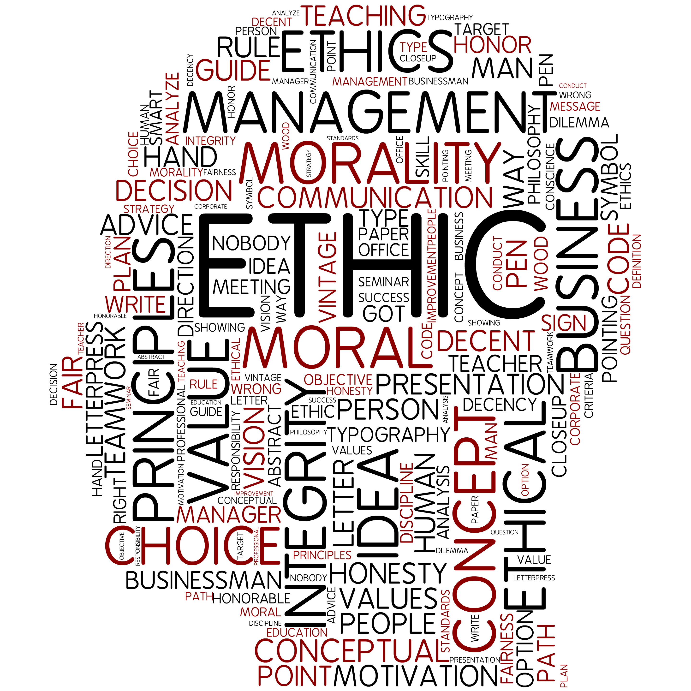
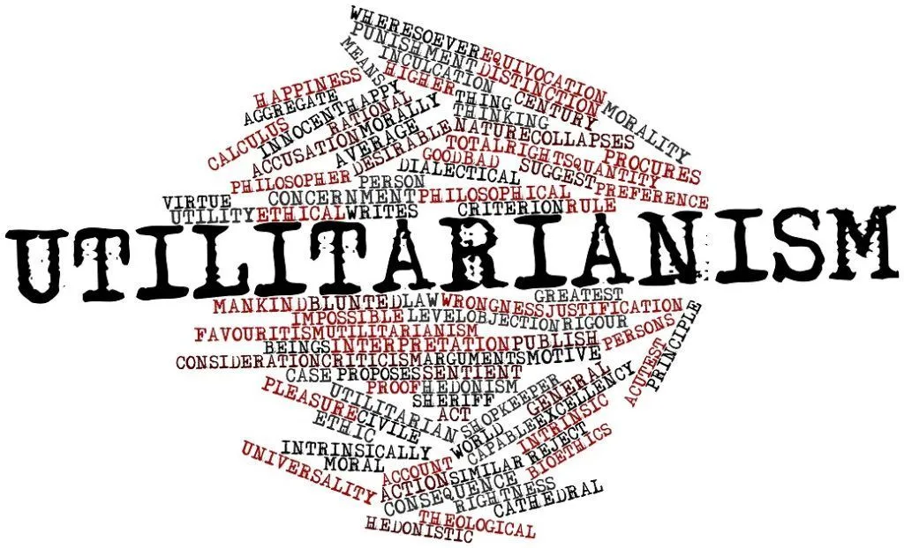
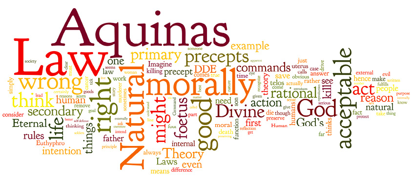

What I Learned in Ethics
by Patricia Mae Caniban
BMLS-2B
Ethics is the branch of philosophy that examines concepts of right and wrong, good and bad, and moral duties and responsibilities. It explores how individuals and societies should conduct themselves and make ethical decisions. Ethics provides frameworks and principles to guide moral reasoning and behavior, helping us navigate ethical dilemmas and strive for ethical conduct.
Discourse of Ethics
The discourse of ethics refers to the discussion, analysis, and exchange of ideas and perspectives on ethical issues. It involves engaging in thoughtful conversations and debates about moral values, ethical theories, and practical applications of ethics in various contexts. Discourse of ethics encourages critical thinking, empathy, and respectful dialogue to foster a deeper understanding of ethical questions and promote ethical decision-making.

Utilitarianism by John Stuart Mill
Utilitarianism is an ethical theory developed by John Stuart Mill, a prominent philosopher of the 19th century. According to utilitarianism, the right course of action is the one that maximizes overall happiness or well-being for the greatest number of people. It emphasizes the importance of consequences and the greatest good for the greatest number. Utilitarianism evaluates actions based on their utility or usefulness and aims to create the greatest overall benefit for society.

Natural Law Theory by Aquinas
Natural law theory is a moral theory rooted in the writings of Thomas Aquinas, a medieval philosopher and theologian. It posits that there are objective moral principles inherent in nature that can be discovered through reason. Natural law is based on the belief that these moral principles are part of a universal order established by a divine creator. It holds that human beings should strive to align their actions with the natural law to achieve moral goodness and fulfill their inherent human nature.
